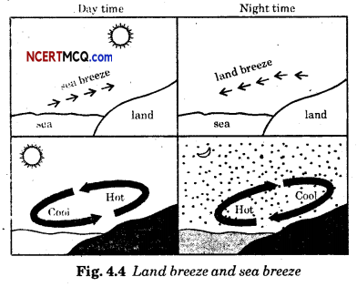

Question 1.
What is a clinical thermometer?
Answer:
The thermometer that is used to measure human body temperature is called a clinical thermometer.
Question 2.
How is degree Celsius denoted?
Answer:
°C.
Question 3.
What is the range of a clinical thermometer?
Answer:
35°C to 42°C.
Question 4.
What is the normal temperature of human body?
Answer:
The normal temperature of human body is 37°C.
Question 5.
Which gets hotter soon, land or water?
Answer:
Land.
Question 6.
Why is range of a clinical thermometer is chosen to be 35°C to 42°C?
Answer:
The clinical thermometer is designed to measure the temperature of human body only. The temperature of human body normally does not go below 35°C or above 42 GC. That is why the clinical thermometer has the range 35°C to 42°C.
Question 7.
What caution do you suggest regarding a clinical thermometer?
Answer:
A clinical thermometer should not be used for measuring the temperature of any object other than the human body. Also, avoid keeping the thermometer in the sun or near a flame. It may break.
Question 8.
Why should you wear white clothes in summer and black clothes in winter?
Answer:
Dark surfaces absorb more heat and, therefore, we feel comfortable with dark-coloured clothes in the winter. Light coloured clothes reflect most of the heat that falls on them and, therefore, we feel more comfortable wearing them in the summer.
Question 9.
Describe the construction of a clinical thermometer.
Answer:
A clinical thermometer consists of a long, narrow, uniform glass tube. It has a bulb at one end. This bulb contains mercury. Outside the bulb, a small shining thread of mercury can be seen. There is also a Celsius scale on the thermometer.
Question 10.
How do land and sea breezes blow?
Answer:
During the day, the land gets heated faster than the water. The air over the land becomes hotter and rises up. The cooler air from the sea rushes in towards the land to take its place. The air forms the sea breeze. The warm air from the land moves towards the sea to complete the cycle.
At night it is exactly the reverse. The water cools down more slowly than the land. So, the cool air from the land moves towards the sea. This forms the land breeze.
Question 11.
Show the formation of land and sea breezes with the help of diagrams.
Answer:

Question 12.
Boojho says, “My left hand tells me that the water in mug C is hot and the right-hand tells mc that the same water is cold. What should I conclude ?“
Answer:
Both conclusions are true relative to each hand. But a single conclusion cannot be drawn from the given information. This is all due to relative temperature.
Question 13.
Boojho got a naughty idea. He wanted to measure the temperature of hot milk using a clinical thermometer. Paheli stopped him from doing so. Why?
Answer:
The clinical thermometer is designed to measure the human body temperature which ranges from 35CC to 42°C. Hot milk has a temperature range of 80°C to 100°C, which is quite high. This may break the thermometer because of abrupt mercury rise.
Question 14.
Boojho wonders why the level of mercury should change at all when the bulb of the thermometer is brought in contact with another object?
Answer:
The temperature of other objects may not be the same as that of the bulb of the thermometer. When bulb is brought in contact with that object, the temperature of the bulls changes. So the level of mercury also changes.
Question 15.
Can you lift a hot pan by holding it from the handle without getting hurt?
Answer:
Yes. If the handle is insulated with the help of a cloth or insulated material like plastic or wood, the pan can be lifted without getting hurt.